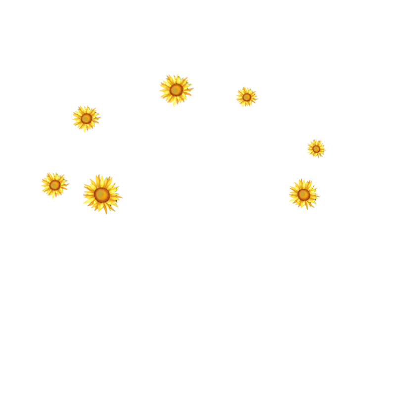
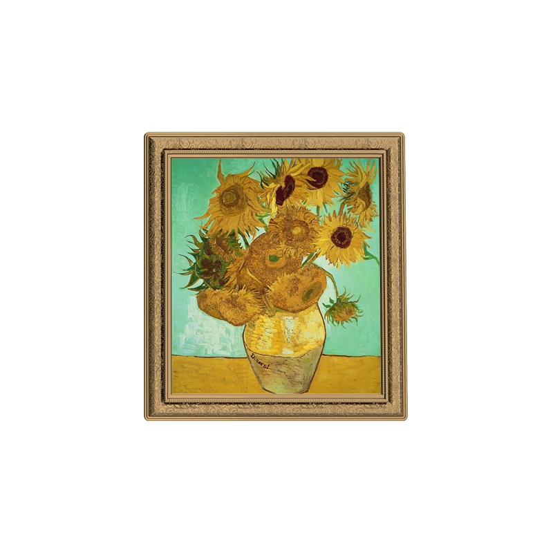
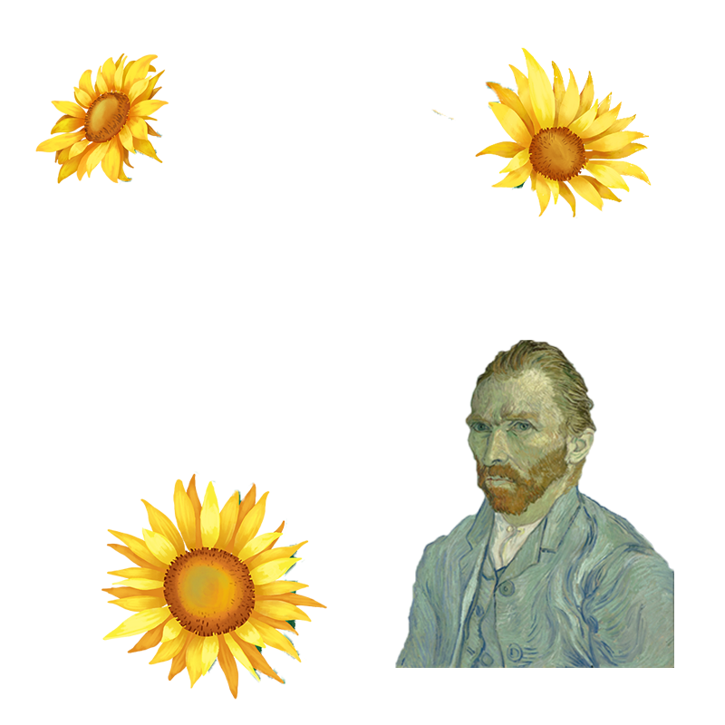
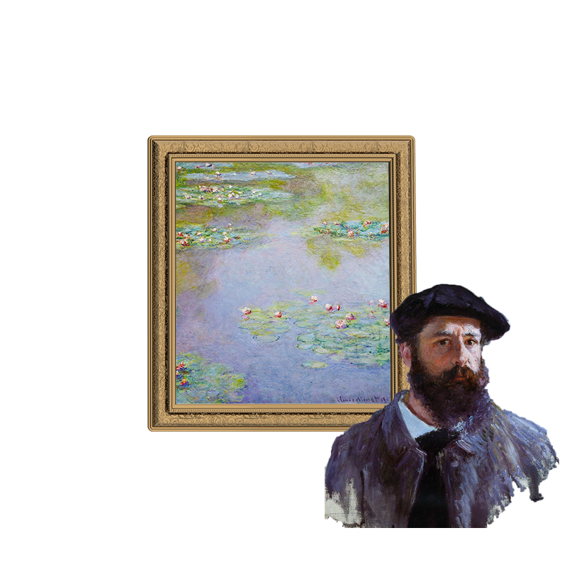
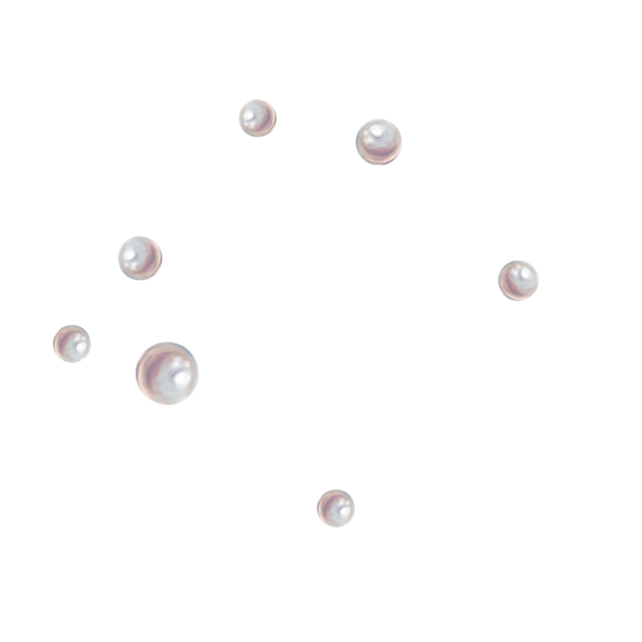
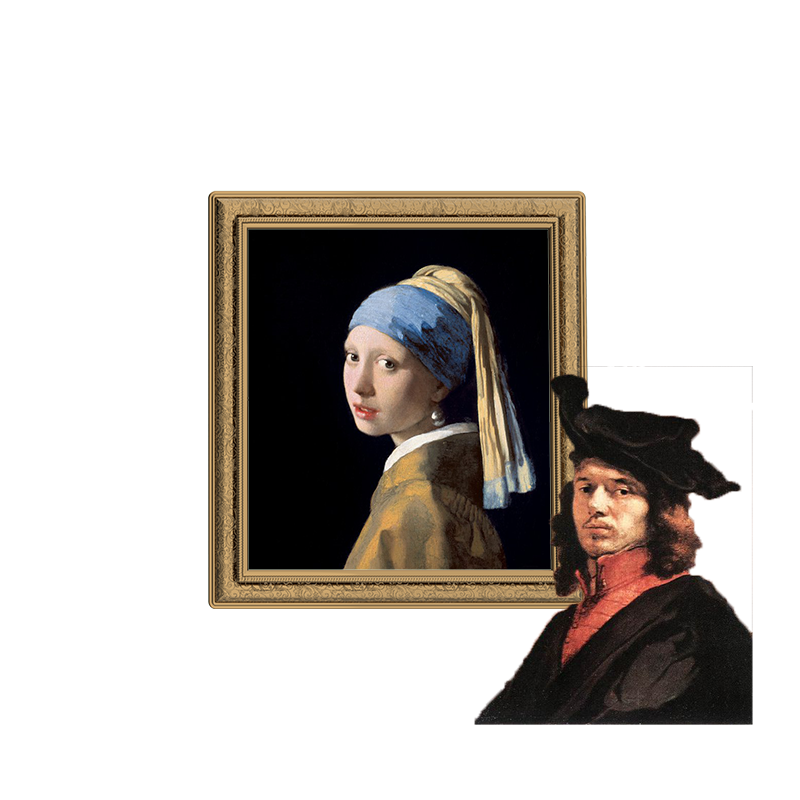
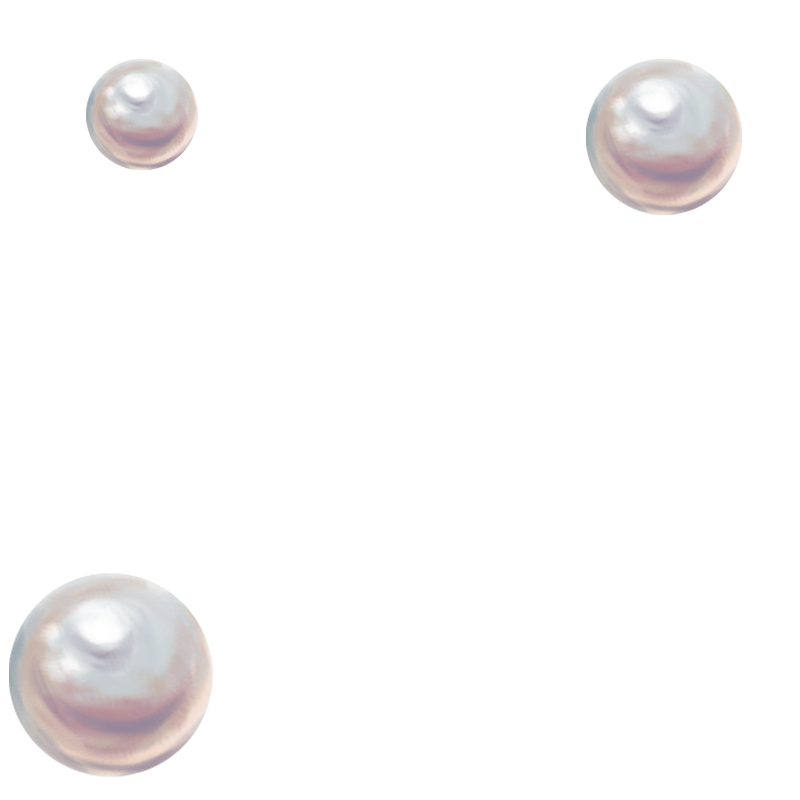

-



sunflowers
Vincent van Gogh (1853-1890)
Vincent Willem van Gogh was a Dutch Post-Impressionist
painter who posthumously became one of the most famous and
influential figures in Western art history. In a decade, he
created about 2,100 artworks, including around 860 oil
paintings, most of which date from the last two years of his
life.
Open
-


Water Lilies
Monet (1840-1926)
Oscar-Claude Monet was a French painter and founder of
impressionist painting who is seen as a key precursor to
modernism, especially in his attempts to paint nature as he
perceived it. During his long career, he was the most
consistent and prolific practitioner of impressionism's
philosophy of expressing one's perceptions before nature,
especially as applied to plein air landscape painting.
Open
-



PearlEarring
Johannes Vermeer (1632-1675)
Johannes Vermeer,was a Dutch Baroque Period painter who
specialized in domestic interior scenes of middle-class life.
During his lifetime, he was a moderately successful provincial
genre painter, recognized in Delft and The Hague. Nonetheless,
he produced relatively few paintings and evidently was not
wealthy, leaving his wife and children in debt at his
death.
Open